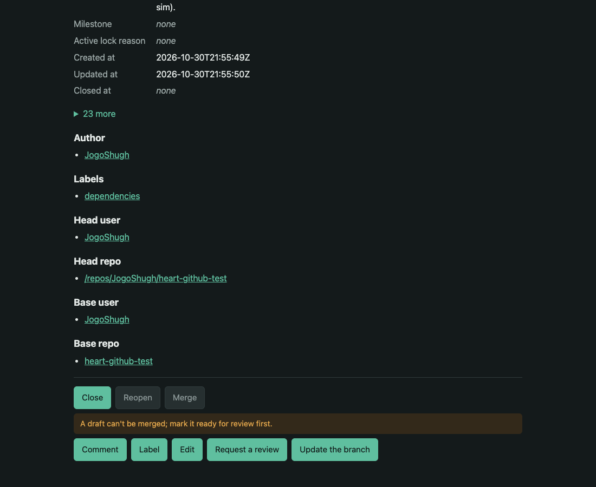
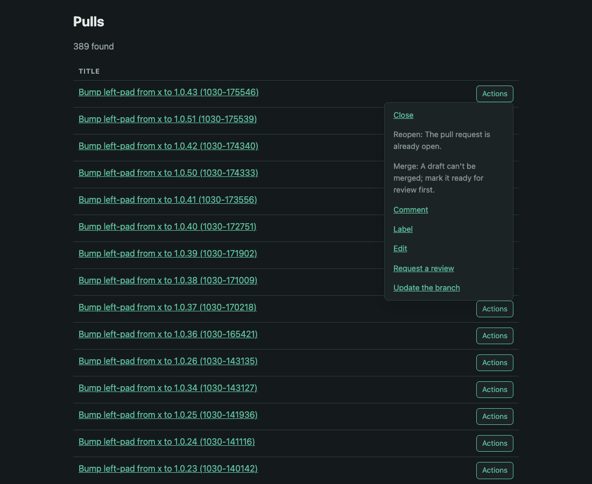
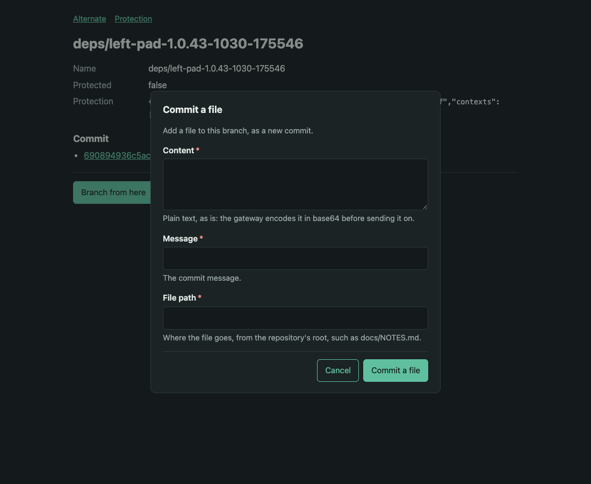
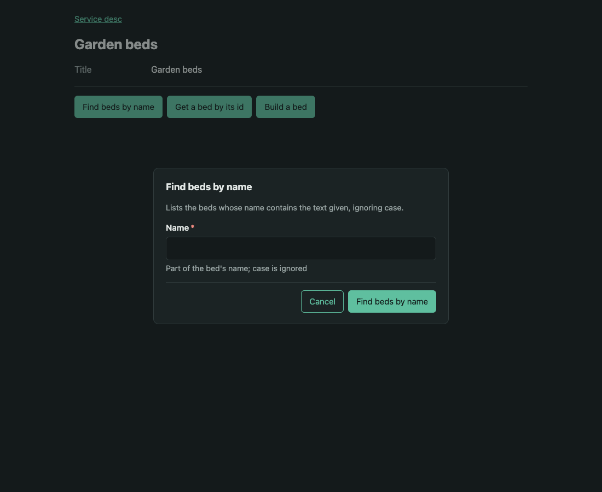
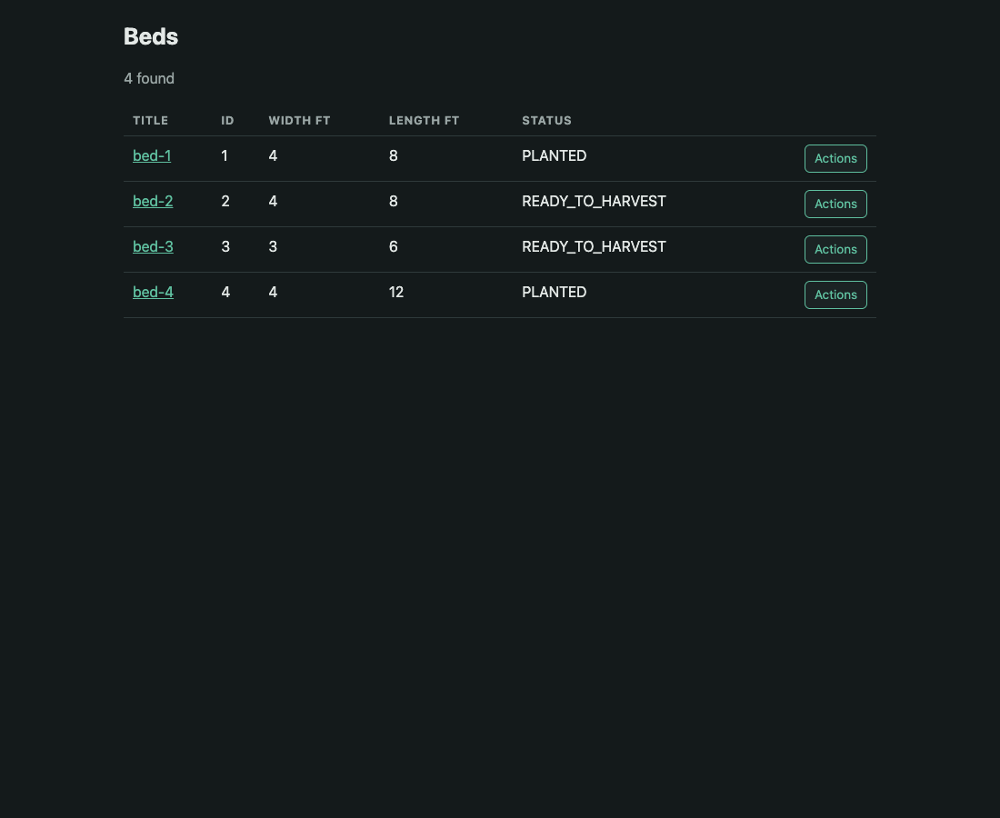
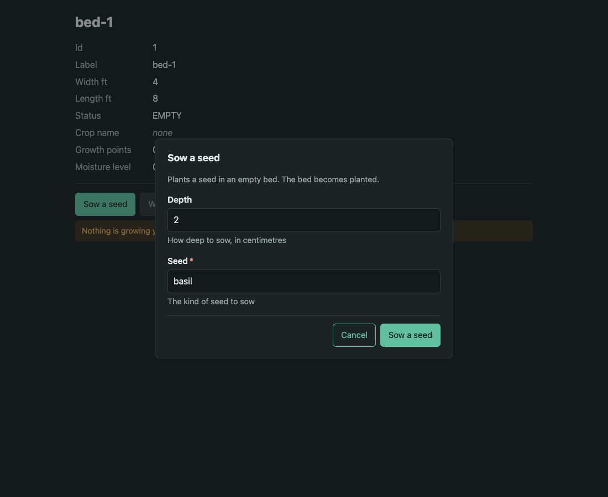
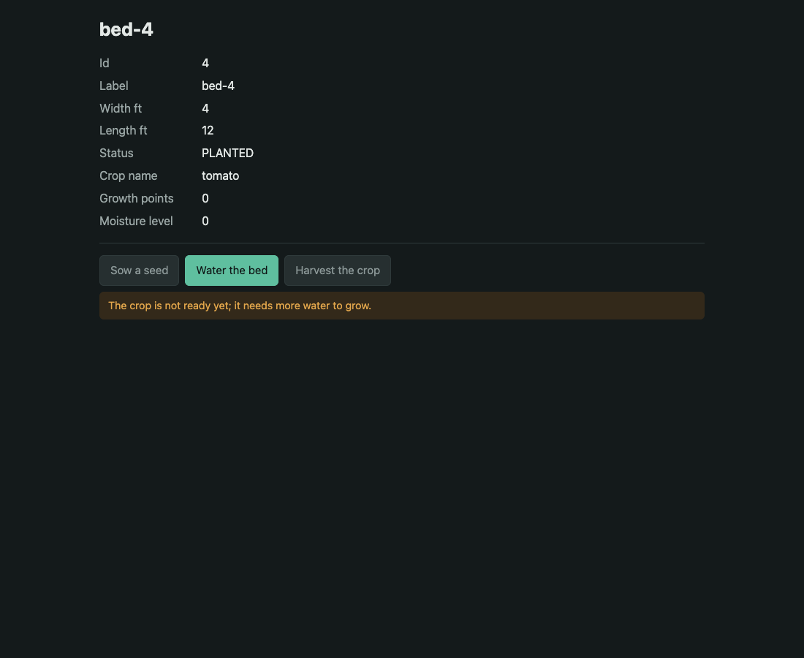
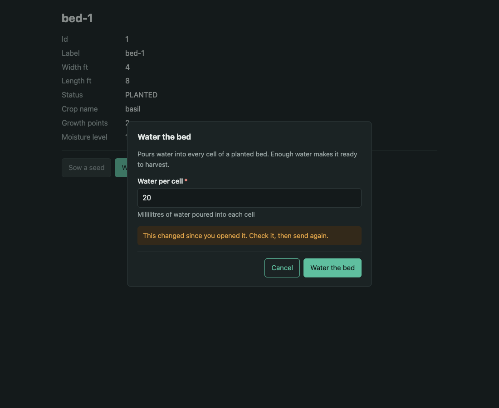
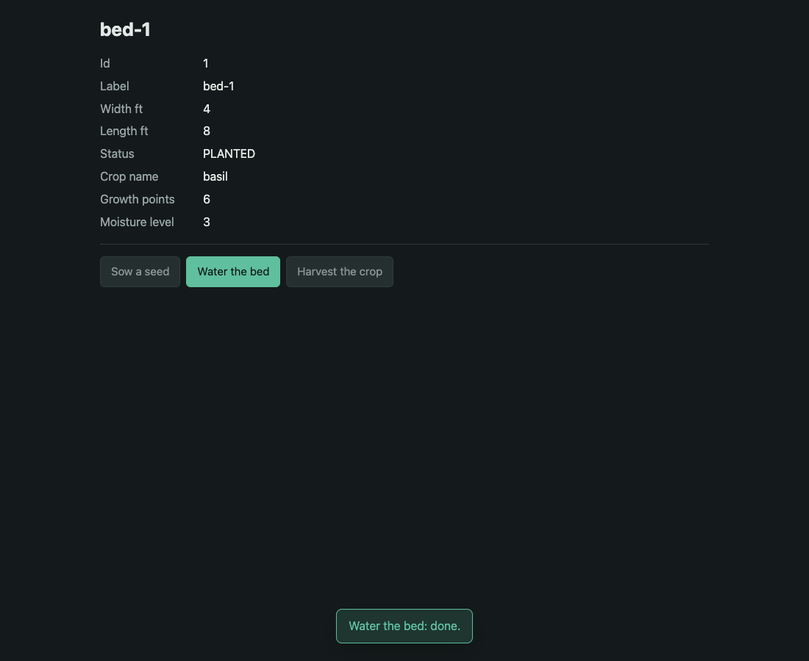

HEART in a browser
Any HEART resource, opened in a plain browser, is a page: its state laid out for a person, a button for each act it offers now, and a greyed button that says why for each act it won't. heart-core renders it, so the garden and the GitHub gateway serve it with no code of their own. Built October 30, 2026, from spec/PLAN-HTML-DIALECT.md; every screenshot is the live servers in headless Chrome.
What a browser gets
| Asked for | Answer |
|---|---|
| A resource | Its state, labelled from member names; links; embedded resources named for a person; one button per act in the type's order |
| An act offered now | A dialog: fields, controls and checks from the act's schema; sent by htmx under the page's own ETag; the page swapped in place, and a line saying what was done |
| An act not offered | A greyed button, still focusable, showing the server's reason when pressed |
| A refusal | The same problem at the same status, as HTML, in the dialog that asked; each violation at its field |
| A stale page (412) | The resource read again; the dialog kept with the person's values if the act is still offered, else closed with the reason |
| The bookmark | Its searches and lookups as dialogs that go to an address; its acts send the browser to what they made |
| A search or a list | A grid: title, then the members the matches share; each row's Actions read from that match when asked |
Chosen only when Accept names text/html above both dialects, so agents are unaffected. htmx and the page's own script and stylesheet are served by the server, immutable; no CDN.
The GitHub gateway




The garden






Still open
- How a browser signs in to the gateway. These screenshots used a local stand-in that adds the caller's token; a GitHub sign-in or a session is still to choose.
- Field order. A schema's properties come in canonical, alphabetical order, so "Base branch" comes before "Title".
- Merge's reason points to "ready for review", which nothing offers (GitHub's REST API has no such operation).
- Lists through the gateway carry titles only, so their grids have one column.
- A JSON Schema validator in the browser, for rules HTML can't say; the server still decides.